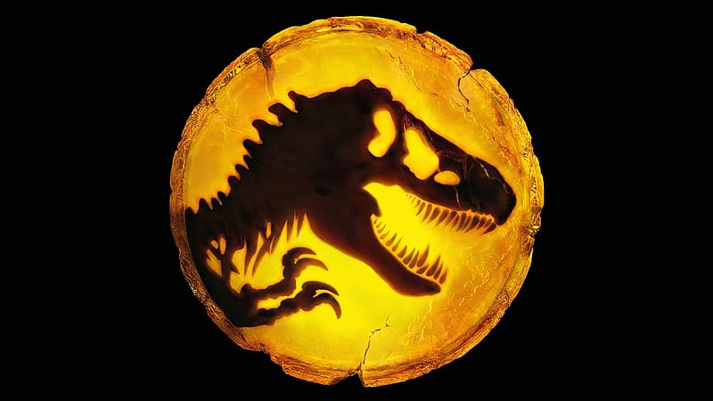

El misterio de la extinción de los dinosaurios

Estudiante de ISIL | 30/09/2026

30/09/2026 - Hace aproximadamente 66 millones de años, un evento catastrófico marcó el final de la Era Mesozoica. El impacto de un asteroide de gran tamaño en la península de Yucatán desató cambios climáticos drásticos que alteraron por completo los ecosistemas globales de nuestro planeta.
Durante décadas, los paleontólogos han debatido las causas exactas, combinando la teoría del impacto con la intensa actividad volcánica de la época. Esta combinación de cenizas en la atmósfera y la falta de luz solar afectó profundamente la cadena alimentaria mundial.
A pesar de la desaparición de los dinosaurios no aviarios, su legado sigue vivo en la actualidad a través de las aves modernas. El estudio continuo de fósiles nos permite comprender mejor cómo la biodiversidad se recupera tras las extinciones masivas.
Síguenos en nuestras redes sociales: